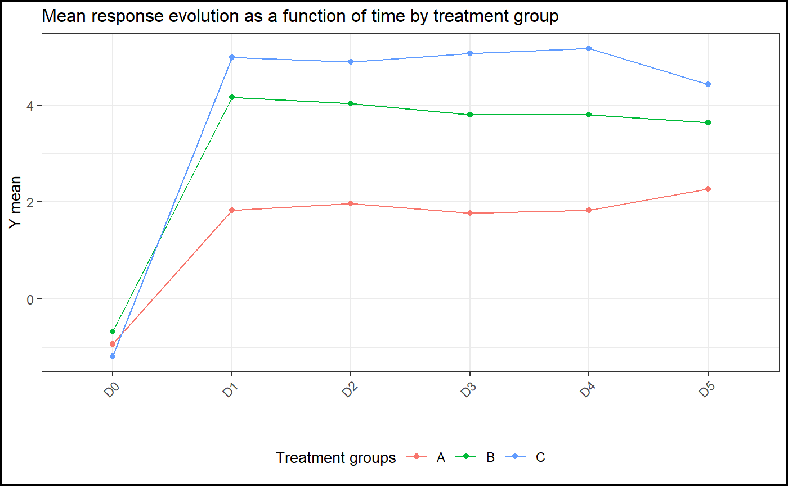

Introduction
Initially, the aim of ClinReport is to create statistical outputs (tables and graphics) in ‘Microsoft Word’ according to ‘clinical standards’ of reporting.
Since the formatted outputs are it’s suitable for any publications, it can also be used outside the scope of clinical trials.
Installation
You can install the released version of ClinReport from CRAN with:
Basic example
library(ClinReport)
library(officer)
library(flextable)
# Load data
data(data)
# Descriptive statistics (Numerical response and 2 explicative variables):
tab1=report.quanti(data=data,y="y_numeric",
x1="GROUP",x2="TIMEPOINT",at.row="TIMEPOINT",subjid="SUBJID")
tab1
#> TIMEPOINT Statistics A (N=30) B (N=21) C (N=17)
#> 1 D0 N 30 20 16
#> 2 D0 Mean (SD) -0.93(0.86) -0.67(1.09) -1.19(0.92)
#> 3 D0 Median -0.82 -0.69 -1.26
#> 4 D0 [Q1;Q3] [-1.59;-0.16] [-1.39;-0.06] [-1.62;-0.83]
#> 5 D0 [Min;Max] [-2.34;0.36] [-2.44;2.10] [-2.99;0.66]
#> 6 D0 Missing 1 1 0
#> 7
#> 8 D1 N 30 20 16
#> 9 D1 Mean (SD) 1.83(1.04) 4.17(1.28) 4.98(0.69)
#> 10 D1 Median 1.78 4.19 5.08
#> 11 D1 [Q1;Q3] [ 0.94; 2.54] [ 3.23; 4.92] [ 4.58; 5.46]
#> 12 D1 [Min;Max] [ 0.11;3.88] [ 1.48;6.19] [ 3.80;6.23]
#> 13 D1 Missing 1 0 0
#> 14
#> 15 D2 N 30 20 16
#> 16 D2 Mean (SD) 1.97(1.17) 4.04(0.89) 4.90(1.36)
#> 17 D2 Median 1.66 4.19 5.06
#> 18 D2 [Q1;Q3] [ 1.23; 2.86] [ 3.62; 4.36] [ 4.34; 5.20]
#> 19 D2 [Min;Max] [-0.18;4.36] [ 2.03;5.63] [ 2.39;7.96]
#> 20 D2 Missing 1 1 0
#> 21
#> 22 D3 N 30 20 16
#> 23 D3 Mean (SD) 1.78(1.17) 3.81(0.94) 5.07(1.12)
#> 24 D3 Median 1.78 3.63 5.22
#> 25 D3 [Q1;Q3] [ 0.93; 2.42] [ 3.13; 4.44] [ 4.11; 5.66]
#> 26 D3 [Min;Max] [-0.16;3.90] [ 2.46;6.01] [ 3.16;7.37]
#> 27 D3 Missing 0 1 1
#> 28
#> 29 D4 N 30 20 16
#> 30 D4 Mean (SD) 1.83(0.85) 3.80(0.95) 5.17(1.03)
#> 31 D4 Median 1.67 3.83 4.88
#> 32 D4 [Q1;Q3] [ 1.26; 2.32] [ 3.12; 4.42] [ 4.69; 5.50]
#> 33 D4 [Min;Max] [ 0.38;3.97] [ 2.31;5.41] [ 3.24;6.96]
#> 34 D4 Missing 1 1 1
#> 35
#> 36 D5 N 30 20 16
#> 37 D5 Mean (SD) 2.27(1.20) 3.64(1.19) 4.43(0.98)
#> 38 D5 Median 2.50 3.86 4.57
#> 39 D5 [Q1;Q3] [ 1.77; 3.21] [ 2.59; 4.60] [ 3.44; 4.97]
#> 40 D5 [Min;Max] [-1.19;4.31] [ 0.91;5.12] [ 2.95;6.54]
#> 41 D5 Missing 0 0 0
# You can have the corresponding graphic:
gg=plot(tab1,title="Mean response evolution as a function of time by treatment group",
legend.label="Treatment groups",ylab="Y mean")
gg